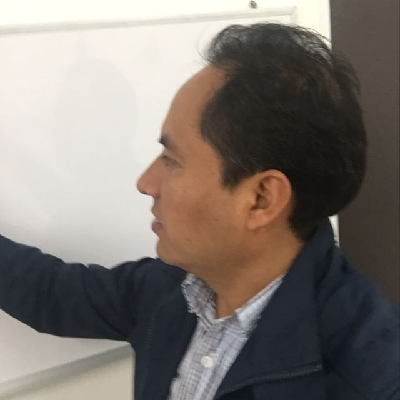
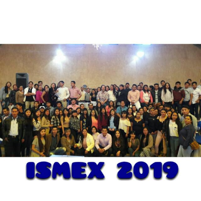

Quien es?
Marco Antonio Castillo Valerio, estudiante en la carrera de Ingenieria en Sistemas Computacionales, cursando Octavo Semestre de la misma, proximo a realizar estadias profesional y desempenar un excelente papel como practicande
Estudiante & Practicante WeB.
- Nacimineto: Enero 17 de 2000
- Website: www.example.com
- Telefono: +52 2761194495
- Ciudad: Tequexquitla, Tlaxcala, Mexico
- Edad: 22
- Papel: Estudainte
- E-Mail: 17macas@gmail.com
- Egresado: No
Joven estudiante y practicamte de la carrera en Ingenieria de Sistemas Computacionales en el Istituto Tecnologico Superior Campus Libres, en la modalidad de escolarisado actualmente Cursando Octavo (8vo.) Semestre, Desmostronado interes en Diseño Web.
Facultades
Dominio Oficce Basico
Conocimetnot Basico Sobre Redes
Respeto
Tolerancia
Comunicacion
Skills
Representaciones graficas sobre el manejo de conocimeinto
Experiencia
.
Sericios
Marco Castillo
Actualmente trabajando en una empresa provedora de Audi Mexico
- Grajales, Puebla.
- (+52) 276 119 88 95
- ismexPU@outlook.com
Education
Soporte & Mantenimiento a equipos de computo
2015 - 2018
CECyTE 01, Tequexquitla, Tlax..
Desempeno en trabajo de equipo para la implementacion de especialicacion de Software y Hardaware a equipos de computo, al igual que Adminitracion de rede LAN
Ingenieria en Sistemas Computacionales
2018 - 2022
Instituto Tecnologico Superior, Libres, Puebla.
Actualmente cursando desarrollo avanzado Web, desarrollo de aplicaciones, animacion, administracion de redes y aplicacion profunda de Sistemas Embebidos
Experiencia
Disenador de ContQuiz
2019 - 2020
ITSL, Libres, Puebla
- Liderar el diseño, desarrollo e implementación de maquetación y de producción.
- Delegar tareas a los 11 miembros del equipo de diseño y asesorar en todos los aspectos del proyecto.
- Supervisar la evaluación de todos los materiales gráficos para garantizar la calidad y precisión del diseño.
- Supervisar el uso eficiente de la aplicacion creada
Certificacion en Desarrollo Web & Aplicaciones Moviles
2021 - 2022
ITSL, Libres, Puebla
- Desarrollé numerosos programas de marketing (logotipos, paginas, apliciones, y servicios).
- Gestioné proyectos o tareas en un momento dado bajo presión
- Recomendado por Ingeniros aptos en el tema de diseno de paginas web
- Elabore esta pagina que actualmente puede observarse
Testimonios
Ingenieros y Empresas
Desarrollador dedicado y eficiente en diseño de diversas paginas y apliaciones Web.
Ing. Yonabi
Profesor & Capacitador
Trabajador capas de ejercer diversas tareas designas en tiempo, forma y calidad.
ISMEX
Empresa
Puntual, responsable y perseverante.
Elisabet
Jefa de Division ITSL
Contacto
Puede localizarme atraves de redes sociales ubicadas en la barra de navegacion, Instituto Tecnologico Superior campus Libres
Numero celular: (+52) 276 119 4495
E-mail: 17macas@gmail.com